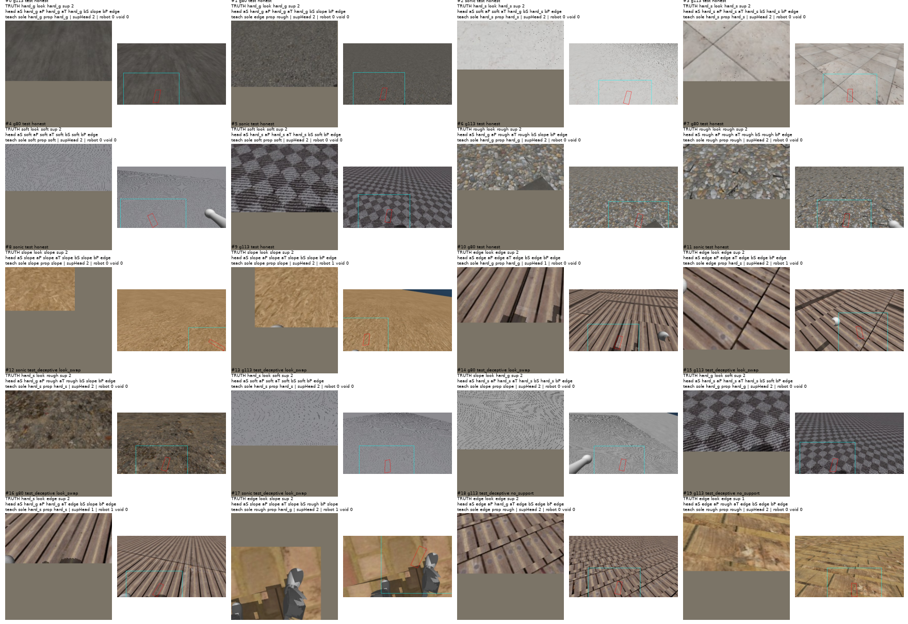

Independent re-check of experiment 1
After experiment 1 (six floor classes, three gaits, an image crop around the landing footprint), an independent re-check that did none of the work recomputed the reported numbers with its own code, searched for leaks between training and test, and looked at samples. This page lists what it found, claim by claim.
In short
- The numbers are right. Every reported number the re-check could recompute reproduced, apart from two small count errors in the text, and every check program of the project passed when run again.
- No leaks. No test episode or test texture in any training set, and no teacher labelled an episode it trained on.
- One claim fails: that LoRA makes the VLM really worse against the real floor on deceptive scenes. The difference is inside the noise.
- Many caveats are about uncertainty. With three test textures per class, the seed spread understates how uncertain the scores are, and several "ties" are inconclusive rather than equal.
- Trivial baselines. The support-state results are about as good as always answering the most common state.
- Not ruled out: the crop's placement leaks some geometry, only one gait was held out for vision, the ViT may have seen the textures in pretraining, and nothing was tested on a real robot.
How it was done
- Read-only. The re-check changed nothing in the data or the results.
- Its own code. Macro-F1 computed by its own code, truth read directly from the dataset's step table, split lists read raw. None of the project's metric code was imported.
- The project's own checks, run again: dataset check 17 pass / 0 fail; the teacher, vision head, support state, VLM real-photo and VLM tuning checks all pass.
- Statistics beyond the seeds. Where the reports used the spread over 3 seeds, the re-check added bootstraps over textures or episodes and texture-aware null models.
- Looking. 20 random test steps were looked at in full (image, footprint, labels, every head's answer).
Tally
| Part | Claims | Hold | Hold with caveats | Do not hold | Not verifiable |
|---|---|---|---|---|---|
| Part 1: dataset, teachers, vision head, support state, VLM on real photos | 44 | 26 | 15 | 0 | 3 |
| All, with part 2 (the VLM tuned on the sole's labels) | 59 | 33 | 22 | 1 | 3 |
Reading the table. "Hold with caveats" means the number reproduces but its reading needs a qualification: a wider interval, a trivial baseline, or a condition the report did not state. The tables below give each claim with its verdict and the caveat next to it.
Dataset
Details: the dataset.
| Claim | Verdict | Note |
|---|---|---|
| Test-list fingerprints the same on both machines and in the vision run | holds | for the honest and the deceptive test list |
| 1,572 episodes, 54,010 steps (29,105 / 4,267 / 6,269 / 14,369 = 26.6 %), 726 hidden-gap steps | holds | exact; the step table is identical on both machines |
| Dataset check 17 pass / 0 fail | holds | 17 / 0 when run again |
| All replays bit-identical | holds with caveats | only 20 episodes checked independently; there joints, IMU, labels and contact flags equal the step-1 files |
| Episode and texture splits disjoint | holds with caveats | 0 episodes in two splits; 42 / 12 / 26 textures disjoint; only 3 test textures per class (18 scored); the deceptive looks reuse the 26 test textures |
Teachers
Details: the two teachers.
| Claim | Verdict | Note |
|---|---|---|
| Seen gaits: sole 0.804 ± 0.003, joints + IMU 0.805 ± 0.002 | holds | |
| Unseen SONIC: sole 0.399 ± 0.004, joints + IMU 0.095 ± 0.015 | holds with caveats | joints + IMU is a degenerate "edge" predictor, below a random guesser (about 0.17), so "chance" undersells how badly it fails |
| Other hold-outs: G113 0.627 / 0.279, G80 0.485 / 0.264 | holds | |
| Other sensors, seen / SONIC: shifted 0.784 / 0.429, pad sole 0.586 / 0.325, outline 0.621 / 0.419 | holds | re-scored from saved predictions |
| Shuffled sole teacher 0.057 | holds | 0.052 seen, 0.070 unseen; collapses to nearly one class |
| The sole teacher reads only the 16 coarse features | holds with caveats | true for all 44 sole models; for both teachers the step window ends at the simulator's noise-free contact flag |
Vision head
Details: the vision head. (a): labels from gaits the teachers saw; (b): labels from SONIC, which they never saw. Test: 5,282 steps with a class.
| Claim | Verdict | Note |
|---|---|---|
| (a) sole 0.816 ± 0.028 vs joints + IMU 0.824 ± 0.030, no real difference | holds with caveats | texture bootstrap −0.009 [−0.052, 0.035]; the tie is expected: both label sets agree equally with truth (0.821 / 0.825) and share the same wrong label on 8 % of training steps |
| (a) truth 0.857 ± 0.009, the 3-4 point gap not real | holds with caveats | truth minus sole 0.041 [−0.016, 0.091]: inconclusive, not "equal" |
| (b) sole 0.488 ± 0.026 vs joints + IMU 0.097 ± 0.048, real | holds with caveats | difference 0.396 [0.31, 0.48]; restates the teachers' gap (labels 0.40 vs 0.09) and rests on one held-out gait; the joints + IMU head answers "edge" on 63-99 % of steps |
| (b) truth 0.867 ± 0.023; sole labels 0.40 | holds | labels 0.404 ± 0.016 |
| Label budgets 5 / 20 / 100 / all | holds | all values the same |
| (b) sole beats joints + IMU at every budget | holds | |
| Shifted readout 0.827 ± 0.014 / 0.498 ± 0.044 | holds with caveats | the same teacher weights on another readout of the same simulation; the sole is not built differently |
| No pad-sole data; teacher pad numbers | holds | |
| Deceptive scenes (9,795 steps): vision 0.07-0.12 vs real floor, 0.66-0.78 vs look | holds with caveats | 3,848 look_swap steps are excluded (no class or a hard_mid look); the (b) heads give 0.22-0.80 vs look |
| Sole teacher on the same steps: 0.820 vs real floor, 0.035 vs look | holds with caveats | on SONIC steps this is the teacher trained with G113 held out, which did see SONIC |
| Hidden-gap steps left out of the class metric | holds | a design statement |
| Dropping 614 crops that show the robot changes nothing by more than 0.008 | holds | largest change (b) sole 0.488 to 0.480 |
| Crop without padding | holds | every row reproduces |
| The pilot's SONIC oddity is gone (0.867 vs 0.857) | holds | the pilot numbers themselves were not verified |
| The viewing-distance explanation of a small remaining gap | could not verify | needs retraining |
| Edge-loaded steps 0.0 / 0.4 / 3.0 % | could not verify | from the dataset's noise-free re-run |
Support state
Details: support state from vision.
| Claim | Verdict | Note |
|---|---|---|
| Truth definition | holds | the prediction files' truth equals the dataset's support state |
| Counts 54 / 303 / 5,912; 5 / 303 / 381; 2 / 497 / 227 | holds | exact; the partial count in the step-1 data is 12,365 of 12,372, not 12,364 of 12,371 (off by one) |
| Support teachers: sole 0.719 / 0.486, joints + IMU 0.445 / 0.305 | holds | |
| Vision (a): truth 0.529, sole 0.548, joints + IMU 0.411; shuffled 0.341 | holds with caveats | vision accuracy (0.94-0.95) equals the "always full" baseline of 0.943 |
| Sole labels beat joints + IMU labels (0.548 vs 0.411; (b) 0.504 vs 0.264) | holds | |
| Sole labels as good as truth | holds | "none" has only 54 test steps |
| Sole teacher after the step 0.736 ± 0.017 | holds with caveats | on SONIC steps it is the teacher that saw SONIC, as above |
| Edge steps: vision 0.462 vs sole 0.693; partial recall 0.864 vs 0.673 | holds | |
| Hidden gaps: vision 0.423 / 0.652 vs sole 0.466 / 0.715 | holds with caveats | answering "partial" every time scores 0.685 accuracy; vision is below that trivial baseline and the sole only 3 points above it |
| Partial recall falls to 0.642 (truth labels) and 0.525 (sole labels); sole 0.702 | holds | |
| The edge-loaded gap sits inside "none" | could not verify | from the dataset's noise-free re-run |
VLM
Zero-shot on real photos (details)
| Claim | Verdict | Note |
|---|---|---|
| Macro-F1 0.678 ± 0.017, accuracy 0.624 ± 0.016, 0 invalid; per class 0.391 / 0.684 / 0.796 | holds | the re-check's own answer parser agrees |
| 239 of 1,350 answers are hard_slip | holds | |
| Question wording chosen on validation only (0.644 > 0.626 > 0.611) | holds with caveats | three validation runs, then one test run; the differences are within noise |
| Validation and test disjoint | holds | 0 shared files and 0 shared image bytes; different sources |
| Verdict "partly" | holds with caveats | only 3 of 6 classes tested; the ± comes from subsamples that share videos |
Tuned on the sole's labels (details)
| Claim | Verdict | Note |
|---|---|---|
| Test and deceptive rows are exactly those of the vision head | holds with caveats | the 5,248 rows are the vision head's test rows that have a best frame; its 0.816 also counts 34 frameless steps; 25 of 25 rebuilt crops byte-identical |
| The real-photo list is the same | holds | same 1,350 files, order and truth |
| LoRA trains on the cross-fitted sole labels | holds | training split and textures only, 0 test episodes or textures; label agreement with truth only 0.81 |
| Question wording unchanged | holds | the same in all 15 runs |
| Nothing selected on test | holds with caveats | no checkpoint choice, but the pilot scored 300 test-split steps before the run sizes were fixed |
| Held-out textures: LoRA 0.721 ± 0.040 vs zero-shot 0.343 ± 0.004, real | holds with caveats | resampling textures gives sd 0.020 (zero-shot) and 0.074 (LoRA); the difference survives: +0.378 [0.197, 0.526] |
| Zero-shot almost never answers slope or edge; 856 of 1,173 hard_grip steps called hard_slip | holds | |
| LoRA weak on soft (0.40) and rough (0.56) | holds | |
| Deceptive vs real floor: LoRA 0.124 ± 0.006 vs zero-shot 0.149, "real, but small" | does not hold | the numbers reproduce, but the 2× rule used only the LoRA seed sd and zero-shot had no spread; an episode bootstrap (344 episodes) gives −0.025 [−0.062, 0.010]; "both below 1/6" holds |
| Deceptive vs look: 0.524 ± 0.041 vs 0.347, real | holds with caveats | +0.176 [0.110, 0.246]; the look accuracy uses 3,315 rows, not 3,990 as reported |
| Real photos: 0.375 ± 0.024 vs 0.679 ± 0.012, LoRA destroys the skill | holds with caveats | a real drop, not a move to classes without photos; per class hard_grip 0.39 to 0.94, rough 0.68 to 0.04, soft 0.80 to 0.31; LoRA answers hard_grip on 1,019-1,053 of 1,350 |
| Shuffled LoRA 0.061 is at chance | holds with caveats | 0.061 is exactly a constant hard_grip answer; random guessing scores 0.167, so it is a collapse floor, not chance |
| 0 invalid answers | holds | |
| The amended sanity line of the check | holds | the right invariant; dropping the 12 affected rows moves the accuracies by at most 0.0002 |
| Verdict: LoRA learns the look and loses real-photo skill | holds with caveats | the ViT head scores 0.821 ± 0.028 against 0.721 ± 0.040 on the same rows, +0.109 [0.001, 0.240], borderline and not a fair comparison; no VLM comparison of sole against joints + IMU labels |
Leaks and controls
- No test data in training. No test or deceptive episode and no test texture in the training or validation rows of any of the 102 heads (class and support). Every head's training gaits match its setting.
- Label provenance. Each teacher's labels checked against its own training and validation lists: 0 violations among the 33,294 rows used for training or validation, and 0 among all 54,010 rows. Cross-fitting works: fold k excludes its own episodes from training and from early stopping.
- Held-out gait. Absent from every teacher's training and validation lists. No teacher list contains a test episode.
- No selection on test. The saved heads' validation score equals their score against the teacher's labels, not against truth (for example 0.7062 against 0.7789). The saved heads reproduce the test predictions exactly for linear heads and on 96-99.7 % of steps for heads with a hidden layer.
- Complete prediction files. All 81 class, 21 support and 18 crop-variant prediction files hold exactly the test and deceptive rows.
- Minor. 34 test steps have no best frame and get grippy floor by default, which lowers every head by about 0.005.
- Shuffled control of the class head. 0.197 (0.234 / 0.180 / 0.177 over seeds) against a threshold of 0.25 that is loose: a random guesser matched to the class mix scores 0.167. Seed 0's 0.234 looks far above a step-level null, but predictions cluster by texture; against a texture-aware null it ranks 74th of 720, below the 95th percentile of 0.261. At chance once clustering is taken into account.
Twenty samples

- Image, footprint and labels agree. The footprint sits on the landing spot and the textures match their class. Two teacher labels look off (an "edge" step that lands fully supported, called grippy by both teachers; a rough step called grippy by both); both are known limits of the label definitions.
- About half of every square crop is grey padding below the image, because the footprint is at the bottom of the frame. On slopes the padding also shifts sideways. The crop without padding gives the same numbers, so padding is not a big shortcut.
- The robot in view. The robot's legs fill one SONIC crop; arms or hands show in others. Excluding flagged crops changes nothing. No depth-like artefacts or empty space in the crops.
- The errors are appearance errors. A checkerboard carpet (soft) is read as tiles, slippery, by every head; the truth-taught head scores 0.00 on that texture. The look_swap samples get the look class, not the physics.
Threats and what could not be checked
Threats to the main conclusion
- Texture sampling (tested). Three test textures per class. The texture-bootstrap 95 % interval for the (a) sole head is [0.71, 0.89]; its bootstrap sd is 0.047 against a seed sd of 0.028, so the seed spread understates the uncertainty. Seeds share the same training rows.
- Geometry and privileged placement (tested). The crop box and footprint weights come from the future landing pose, which only the simulator knows. A classifier on crop and footprint geometry alone, with no pixels, gets 0.45 in (a) and 0.30 in (b), and 0.50 accuracy against the real floor on look_swap. The ViT heads score only 0.07-0.12 there, so they mostly read appearance, but some geometry signal could sit inside the honest test numbers.
- The seen-gait tie is near-predetermined (tested). Both label sets have equal quality.
- One direction for the unseen gait (not tested). Only SONIC was held out for vision. The collapse of the joints and IMU teacher may be specific to these two training gaits.
- Could not rule out. DINOv3's pretraining may have seen the CC0 ambientCG textures. Transfer to the real world is untested.
Could not check
- Replay fidelity beyond 20 episodes, and rendering correctness beyond the 20 samples.
- The DINOv3 features themselves: they were not re-extracted.
- The pilot's numbers, the viewing-distance explanation (needs retraining), and the edge-loaded-foot shares (from the dataset's noise-free re-run).
- How the 288 separate sensor test simulations and the pad-sole simulation were built; only their saved predictions were re-scored.
- The mapping from real-photo materials to project classes, and the photos' licence.
- The LoRA training itself (not re-run) and GPU nondeterminism. Zero-shot on real photos gives 0.679 in the tuning run against 0.678 before: a few answers differ (310 against 307 hard_grip answers).
Scores are macro-F1 per step against simulator truth on held-out textures unless a row says accuracy; intervals in brackets are bootstrap intervals over textures or episodes. Experiment 1 pages: dataset, teachers, vision head, support state, VLM on real photos, VLM with LoRA. The re-check of experiment 2: independent re-check of experiment 2.